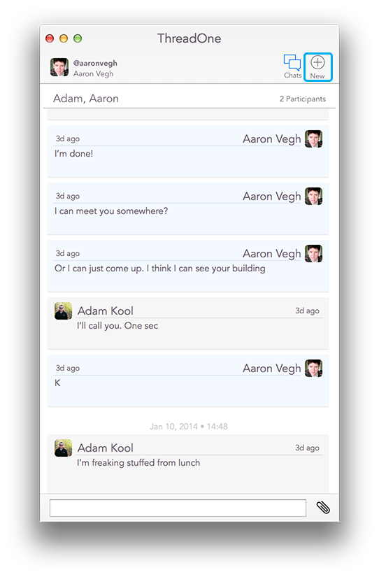
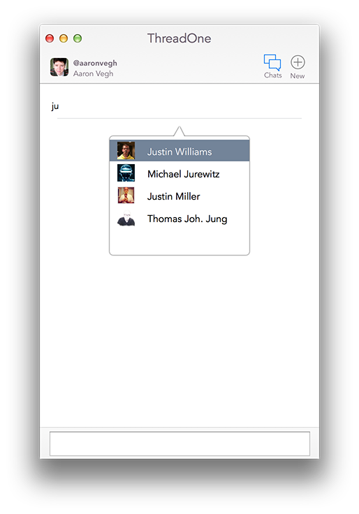

When you load up ThreadOne, you'll see a list of all your existing chats; T1 works with App.Net, and automatically syncs with the online service, pulling in the content you've created in other ADN applications.
If you want to create a new chat, it's as simple as clicking the "New" button in the toolbar.
You'll see a text field. Start typing a name. As you continue typing, a list of matching names will appear. Using the arrow keys, or your mouse, you can choose the name you're looking for.
Tip: Suggestions will come from your followers and followees on ADN first as they're cached by ThreadOne. If the person you're looking for is not in that group, give it another few seconds and the name should appear.
You can choose as many users to chat with as you like. After picking the first name, just click the "Add" button to choose another user.
Once you have all the users you want, use the text entry field at the bottom of the window to kick off the chat with your first message.
If you have chatted with the same user(s) before, your initial message will restore that chat.
Learn more about ThreadOne at our web site: ThreadOneApp.com.